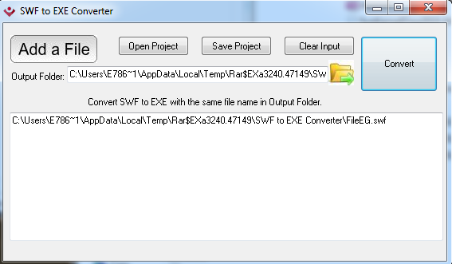
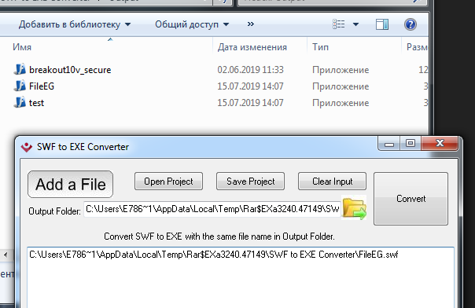

How to open SWF files
So, you probably get there beacuse of you dont know how to use SwF2ExE programm. There is how to do it.
After getting the converter, start converting your SWFs to exe. Click "Add a file" button and find your SWF.
3. Click "Convert" button, open output folder and replace your EXE to another location.
